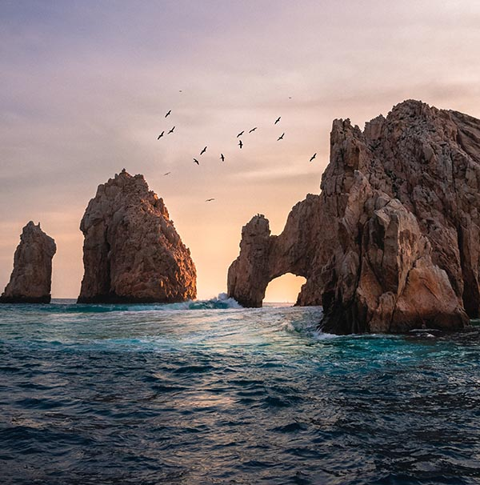
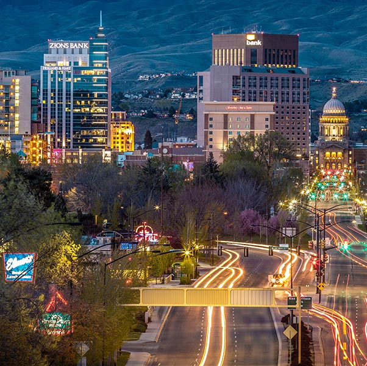

The Tulum Archaeological Zone in Cancun, Mexico.

Beautiful scene off the shore of Mexico, near Cabo San Lucas, Baja California Sur, Mexico.The peninsula of Cancun stretches out into the crystal clear waters of Mexico.This beautiful ancient pyramid can be found near ChiChen-Itza, Yucatan, Mexico.The beautiful Chureito Pagoda with Mt Fuji in the distance.The beautiful night life in the city, Tokyo, Japan.A beautifully lit alley way in Tokyo, Japan, full of diners and bars.A beautifully lit alley way in Tokyo, Japan, full of diners and bars.See beauty right in your own back yard at Shoshone Falls in Idaho.Enjoy beautiful views of the Rocky Mountains from Idaho's many outdoor recreation sites.

Explore the lively city of Boise Idaho and enjoy the safety of the streets.A beautiful aerial view of one of the places in Idaho you can explore, Sandpoint, on the banks of Lake Pend Oreille.The beautiful countryside of Mandel, Rheinland-Pfalz, Germany.With a beautiful river on the border of France and Germany, explore the town of Wissembourg.Explore the historical city of Berlin and find out all its most beautiful places.Visit Germany's ancient sites, like Newschwanstein Castle, Schwangau, Germany.